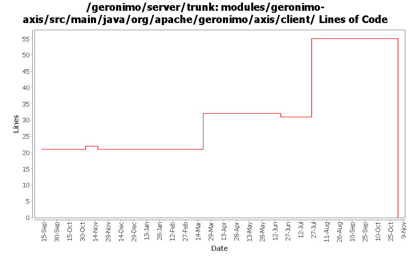

[root]/modules/geronimo-axis/src/main/java/org/apache/geronimo/axis/client

| Author | Changes | Lines of Code | Lines per Change |
|---|---|---|---|
| Totals | 50 (100.0%) | 80 (100.0%) | 1.6 |
| gawor | 4 (8.0%) | 70 (87.5%) | 17.5 |
| jlaskowski | 1 (2.0%) | 6 (7.5%) | 6.0 |
| rickmcguire | 2 (4.0%) | 3 (3.8%) | 1.5 |
| kevan | 29 (58.0%) | 1 (1.3%) | 0.0 |
| prasad | 14 (28.0%) | 0 (0.0%) | 0.0 |
GERONIMO-3565. Modules distributed amongst framework/modules and plugins
0 lines of code changed in 14 files:
initialize SEIFactory once. This should help even more with perm gen problem and reduces heap usage. Daytrader also seems much happier in the webservices mode too.
29 lines of code changed in 1 file:
cache generated classes for service-refs - should reduce perm gen OOM errors (jaxrpc needs one more fix)
30 lines of code changed in 1 file:
removed printStackTrace() call
0 lines of code changed in 1 file:
GERONIMO-3246 Cleanup exception handling so stack traces for first failures are not discarded.
3 lines of code changed in 2 files:
basic saaj 1.3 integration
11 lines of code changed in 1 file:
GERONIMO-2537 Update the src headers in server/trunk/modules to be compliant with the new ASF src header and copyright policy (http://www.apache.org/legal/src-headers.html). I also did some cleanup of the src headers and tried to make them all a consistent format
1 lines of code changed in 27 files:
Partial fix for GERONIMO-2537 All Geronimo source files must be brought in line with the new ASF source header and copyright notice policy
The modules directory is supposed to be migrated. There're some issues with some files, but they'll be handled manually
6 lines of code changed in 1 file:
GERONIMO-2313 Merge security fixes onto trunk. Insure that the Context contains the appropriate caller.
0 lines of code changed in 2 files: